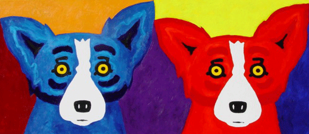

7 Things That All Art Should Do
- 1. All art should comment on its own making.
Art can do many things, but without a doubt, one of the things that art does best is comment on its own making.
Indeed, all art should reveal its own mode of production to the viewer.
- 2. All art should operate on both aesthetic and conceptual levels.
Artworks are most effective and impactful when they function on both an immediate aesthetic/formal level and on a more conceptual/theoretical level.
It's just silly to confine a work of art to either the purely aesthetic or the purely conceptual: we can all agree that all art should function simultaneously
in both of these realms.
- 3. All art should be grounded in the earthly but gesture toward the infinite.

Humans are terrestrial creatures, and the art that we make should undoubtedly be rooted in our earthly reality. But with our powerful minds, we can
generate ideas that exist on the loftiest of intellectual planes; all art should also aim to tap into that which exists beyond the terrestrial and the earthly -
to gesture toward the infinite.
- 4. All art should be freely accessible online.
It's the year 2015, so at this point it's a no brainer that all art should be freely accessible and viewable on the Internet. Art is universal; it has the power
to enrich the life of literally anyone. As such, all art should be readily available online.
- 5. All art should be honest.
It's hard to imagine a viewer being able to meaningfully engage with a work of art that is not completely honest and sincere. Even worse, if one were to find out
after the fact that an artwork that he or she believed to be honest was in fact dishonest, the conclusions that this viewer drew from the artwork would be completely invalidated;
indeed, the individual's entire experience of viewing the artwork -- and even, perhaps, of viewing all art -- would be called into question.
For these reasons, all art should be honest.
- 6. All art should fulfill the desires of its patron.
The patrons who commission artworks have specific desires and expectations for the art that they are paying for. Not only would it be ethically questionable for a work of art
to fail to meet these expectations, it would violate the contract that the artist and patron have signed. It is thus clear that all art should, and indeed legally must, fulfill the
desires of its patron.
- 7. All art should reveal something about its maker.

All art should not only comment on its own making, but should reveal something about its own maker. Knowing something about the author of a work gives the viewer new insights into
the work itself. Furthermore, art-makers are some of the bravest and most forward-thinking members of society, and it is important to study and understand their lives and motivations.
For these reasons, all art should reveal something about its maker.
- Return to Listicle Website.